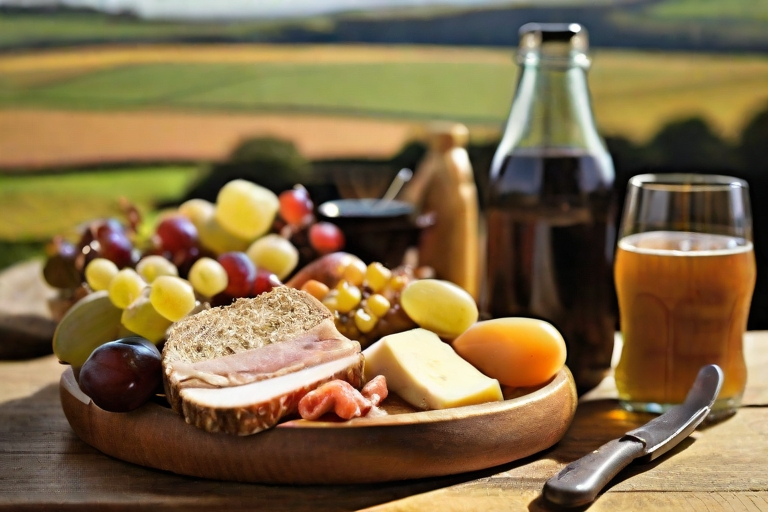

Fish and Chips: approximate price
5.00-10.00
This iconic British dish consists of deep-fried fish (usually cod or haddock) accompanied by chunky, golden-brown chips (thick-cut fries). It is often served with mushy peas and tartar sauce.
Fish and Chips: approximate price
5.00-10.00
A classic Sunday roast, this dish features roasted beef, typically served with Yorkshire pudding (a savory baked batter), roast potatoes, vegetables, and gravy. It's a comforting and traditional meal enjoyed by many families.
Roast Beef and Yorkshire Pudding: approximate price
5.00-15.00
A savory pie made with minced lamb or mutton, mixed with vegetables, and topped with mashed potatoes. The dish is baked until the top is golden brown and crispy. Cottage pie is a similar dish made with minced beef instead.
Shepherd's Pie: approximate price
10.00-18.00
This simple and beloved dish features sausages (bangers) served with mashed potatoes and often accompanied by onion gravy. It's a hearty and satisfying comfort food.
Shepherd's Pie: approximate price
10.00-18.00
A traditional British cold meal that typically includes cheese, bread, pickles, and cold meats. It's often served with salad, chutney, and sometimes a hard-boiled egg. This dish has variations, and the components can vary based on regional and personal preferences.
Shepherd's Pie: approximate price
10.00-18.00